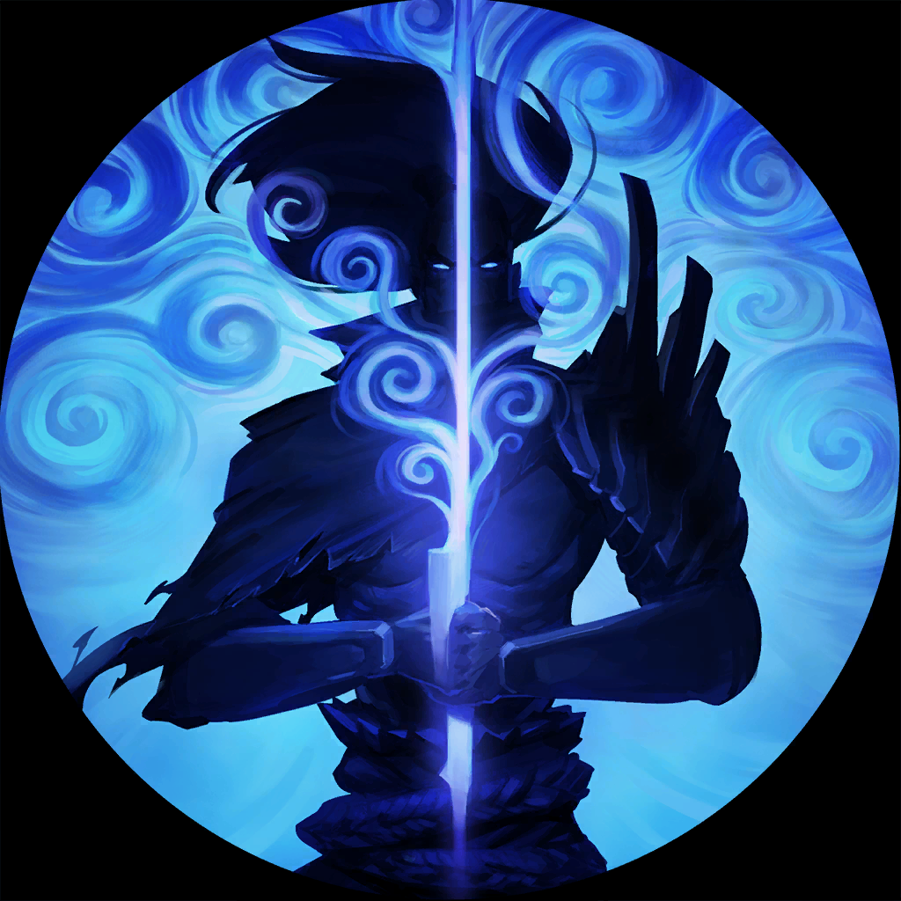

Yasuo is a custom-built Discord bot designed to streamline combat during Dungeons & Dragons (D&D) sessions. Particularly for new players. Yasuo makes ordered combat, action tracking, attacking, casting spells, and special actions simple by using simple slash commands. To do this, it features automatic dice rolls, modifiers, damage calculations, condition tracking and more.
Even without extensive D&D knowledge, players benefit from the bot’s automation of common mechanics like advantage/disadvantage, hits/saves, crits and vulnerabilities. For Dungeon Masters, applying manual damage, healing and managing special conditions gives agency to include missing mechanics and players unwilling to use Yasuo.
One of the most distinctive elements of the bot is its lack of strict restraints. Rather than restricting the player with rigid validations and vague error messages, the bot is designed to trust the player. When a command is entered incorrectly or imprecisely, the bot tries to interpret it anyway. Instead of simply failing, it offers guidance or partial results, giving the player the freedom to act without fear of breaking the system.
This approach makes Yasuo more like a helpful co-pilot than a referee. It supports the flow of combat rather than interrupting it, and empowers users, especially players unfamiliar with automation tools. Instead they are free to focus on decision-making rather than syntax or rule precision.
Yasuo was developed solo for personal use in D&D sessions. Yasuo uses Python 3.10 and Discord.py v2.4.0 and was created with lightweight, accessible tools such as Notepad and the Python IDLE shell. Simple CSV files were used for the database and a clear goal to make combat faster and more engaging for new and experienced players alike. Using the RAD development methodology, the project maintained an end-user-centered design and produced frequent prototypes.
From early versions, feedback was incorporated to refine commands, improve clarity, and add new features. It would be unrealistic to implement every feature/rule within D&D; priorities will have to be made. With that being said, those not included. It's currently in a stable state and will likely be continually and gradually improved and expanded over time.